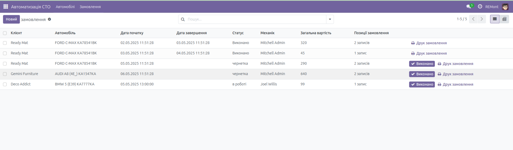

Комплексне рішення для управління авторемонтним бізнесом
Модуль "Автосервіс" для Odoo 17 - це професійне рішення для керування авторемонтними майстернями та СТО. Модуль надає всі необхідні інструменти для ефективного управління замовленнями, клієнтами, транспортними засобами та складом запчастин.
Повний цикл обробки ремонтних замовлень від прийому до здачі авто клієнту. Включає статуси, етапи виконання, історію змін.
Детальна база клієнтських авто з технічними характеристиками, історією обслуговування, VIN-номерами.
Каталог марок, моделей та модифікацій авто з можливістю додавання технічних специфікацій.
Управління запасними частинами: надходження, резервування, списання, контроль залишків.
Готові звіти по виконаним роботам, завантаженню майстерні, прибутковості, використаним матеріалам.
Сумісність з модулями Бухгалтерії, CRM, eCommerce та іншими стандартними модулями Odoo.

Інтерфейс управління замовленнями
Встановіть модуль "Автосервіс" для Odoo вже сьогодні та отримайте повний контроль над своїм бізнесом!
Завантажити модуль Документація